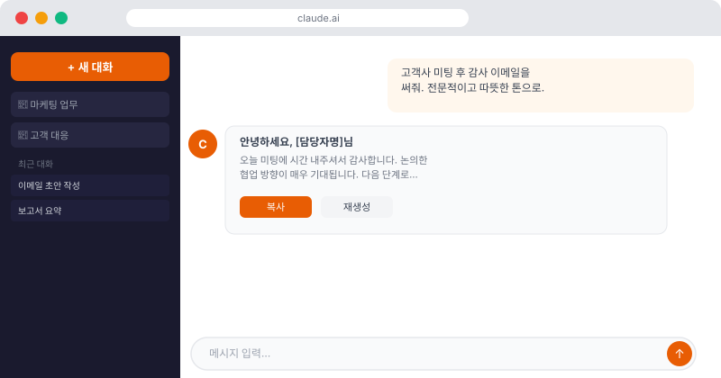

🤔 "AI? 나는 개발자도 아닌데…"
혹시 이런 생각을 해보셨나요? "AI는 개발자들이 쓰는 것 아닌가?" "나는 코딩을 모르는데 AI가 도움이 될까?" 아니면 "ChatGPT 써봤는데 별로 신기하지 않던데."
사실 지금 가장 AI를 잘 활용하고 있는 사람들은 개발자가 아닙니다. 마케터, 기획자, 운영팀, HR 담당자 — 즉 글을 쓰고, 자료를 정리하고, 사람들과 소통하는 업무를 하는 분들이 AI로 가장 극적인 생산성 향상을 경험하고 있어요.
📊 실제로 얼마나 빨라지나요?
말보다 수치가 더 설득력 있죠. 실제 직장인들이 AI 도입 후 경험한 시간 단축 사례를 살펴볼게요.
| 업무 | AI 전 | AI 후 | 단축률 |
|---|---|---|---|
| 이메일 초안 작성 | 20분 | 3분 | 85%↓ |
| 회의록 요약 | 30분 | 5분 | 83%↓ |
| 보고서 초안 작성 | 2시간 | 25분 | 79%↓ |
| 데이터 정리 및 분류 | 1시간 | 10분 | 83%↓ |
| 발표 자료 구성 | 3시간 | 45분 | 75%↓ |
물론 모든 사람이 처음부터 이런 결과를 얻지는 않습니다. AI를 잘 활용하는 데도 약간의 연습이 필요해요. 하지만 이 강의를 마치면, 여러분도 비슷한 효과를 경험하실 수 있습니다.
🚗 AI는 자율주행 보조 시스템과 같습니다
AI를 처음 접하는 분들께 제가 가장 좋아하는 비유를 소개할게요. 요즘 차에 있는 자율주행 보조 시스템을 생각해보세요.
- 차선 유지 보조: 내가 운전하되, 졸거나 딴 생각할 때 잡아줘요
- 크루즈 컨트롤: 고속도로에서 속도 유지를 대신해줘요
- 자동 주차: 내가 어려워하는 부분을 대신해줘요
AI도 마찬가지입니다. AI가 내 업무를 완전히 대신하는 게 아니에요. 내가 판단하고 결정하되, AI가 반복적이고 시간이 많이 걸리는 부분을 도와주는 거예요. 운전의 주인은 여전히 나고, 업무의 주인도 여전히 여러분입니다.
💼 내 업무에서 AI가 도울 수 있는 3가지 영역
1. 글쓰기 & 커뮤니케이션
이메일, 보고서, 제안서, 기획서, 공지사항 — 텍스트를 쓰는 모든 업무에서 AI는 강력한 초안 작성 도우미가 됩니다. "이런 내용의 이메일 써줘"라고 말하면 즉시 초안을 만들어줘요. 여러분은 검토하고 수정만 하면 됩니다.
2. 정보 정리 & 요약
긴 회의록, 보고서, 계약서, 뉴스 기사 — 긴 텍스트를 핵심만 뽑아 요약하는 작업을 AI가 순식간에 해줍니다. 10페이지짜리 보고서를 3줄로 요약하거나, 회의 내용에서 액션 아이템만 추출하는 것도 가능해요.
3. 아이디어 발굴 & 검토
마케팅 문구 10가지 제안, 신제품 기획 아이디어 브레인스토밍, 내가 쓴 글의 문제점 찾기 — AI는 지치지 않는 아이디어 파트너입니다. 24시간 언제든 "이 내용 어떻게 생각해?"라고 물어볼 수 있어요.

⚠️ AI의 한계도 알아두세요
AI가 만능은 아닙니다. 제대로 활용하려면 한계도 알아야 해요.
- AI는 틀릴 수 있습니다: 자신있게 말하더라도 사실과 다를 수 있어요. 중요한 정보는 반드시 확인하세요.
- 최신 정보는 제한적: AI의 지식에는 업데이트 시점이 있어요. 최신 뉴스나 실시간 정보는 직접 확인이 필요합니다.
- 개인정보는 조심: 회사 기밀이나 개인정보를 AI에 입력할 때는 회사 정책을 먼저 확인하세요.
🎯 이 강의를 마치면 어떻게 달라질까요?
이 강의 전체를 마치면, 여러분은 다음을 할 수 있게 됩니다:
- 업무 이메일을 AI로 5분 만에 초안 작성하기
- 긴 문서를 핵심 3줄로 요약하기
- Claude 프로젝트로 나만의 AI 업무 공간 만들기
- Google Sheets 반복 업무를 자동화하기
- 바이브 코딩으로 간단한 도구 직접 만들기
자, 그럼 먼저 지금 내 수준이 어느 정도인지 확인해볼까요?
✅ 내 업무에서 AI가 도울 수 있는 영역 체크
해당하는 항목에 체크해보세요. 체크 수가 많을수록 AI 도입 효과가 클 거예요!